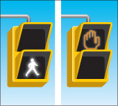
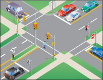

Pedestrian signals help pedestrians cross at intersections with traffic lights. The signal for pedestrians to walk is a white walking symbol. A flashing or steady orange hand symbol means pedestrians must not begin to cross.

A pedestrian facing a walk signal may cross the road in the direction of the signal. While crossing, pedestrians have the right-of-way over all vehicles.
A pedestrian facing a flashing or steady hand symbol should not begin to cross the road. Pedestrians who have already begun to cross when the hand signal appears, should go as quickly as possible to a safe area. While they are crossing, pedestrians still have the right-of-way over vehicles.

At intersections with traffic lights where there are no pedestrian signals, pedestrians facing a green light may cross. Pedestrians may not cross on a flashing green light or a left-turn green arrow.
Intersection pedestrian signals
Where there are pedestrian push-buttons, a pedestrian must use the button to bring on the walk signal. Pedestrian signals give people more time to cross than regular traffic lights. On a busy main road, an intersection pedestrian signal helps people to cross the road safely by signalling traffic to stop. The intersection pedestrian signal has one or more crosswalks; pedestrian walk and don't walk signals; push buttons for pedestrians; and, traffic signal lights on the main road only. Stop signs control traffic on the smaller, less busy crossroad.
You must observe, obey the traffic rules and use safe driving skills to drive through these intersections. See also the section on driving through intersections.
Summary
By the end of this section, you should know:
- What the symbols on pedestrian signals indicate
- What an intersection pedestrian signal is and what to do if you encounter one